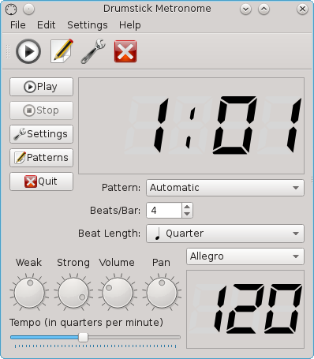
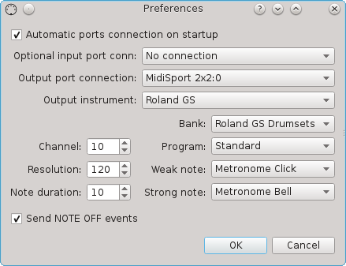
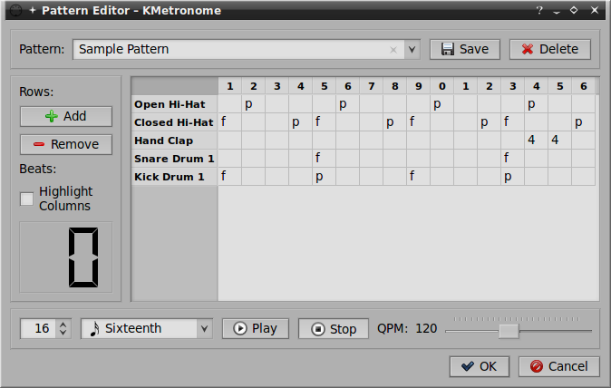

The Drumstick Metronome Handbook
Copyright © 2005-2019 Pedro Lopez-Cabanillas
Drumstick Metronome is a MIDI based metronome using the ALSA sequencer.
Table of Contents
Drumstick Metronome is a MIDI based metronome using the ALSA sequencer.
Intended for musicians and music students, it is a tool to keep the rhythm while playing musical instruments.
It uses MIDI for sound generation instead of digital audio, allowing low CPU usage and very accurate timing thanks to the ALSA sequencer.
Report problems, bugs and feature requests to the mailing lists or the tracking system at SourceForge project site

You only need to adjust some controls, like the tempo slider, the beats/bar spin box and the beat length selector. Press the play button to start. Use the stop button at your convenience.
Tempo can be set from 25 to 250 QPM using the slider. The units are quarters per minute (Mälzel Metronome units). You can also double click over the main window to open a dialog box where you can enter a new tempo directly with the keyboard. There is also a combo box to choose and display the tempo using Italian musical names.
Beats/Bar can be set from 1 to 32 beats. These are the number of beats on each measure or bar, and it is the numerator on the time signature as it would be notated.
The beat length is the denominator on the time signature specification, and represents the duration of each beat. Changing this value doesn't change the meaning of the tempo units.
Pattern is a drop-down list to choose a pattern definition. The default "Automatic" value means that the program generates patterns using the notes set in the configuration dialog (Strong/Weak) and the rhythm definition provided by "Beats/Bar" and "Beat length". It also contains the names of user-defined patterns.
This program uses the MIDI protocol, so it is a good idea to to have some basic notions about MIDI in order to fully understand the concepts behind it. You can find here a good introduction: What is MIDI.
Drumstick Metronome produces MIDI events. If you want to hear the events translated into sounds you need to connect the MIDI OUT port from this program to the MIDI IN port of a MIDI synthesizer. It can be either a hardware MIDI synthesizer or a software one. If it is an external hardware synthesizer, you also need an ALSA supported MIDI interface installed in your computer, and a MIDI cable attached to both the computer's MIDI interface, and the synthesizer MIDI IN socket.
If you don't have an external MIDI synthesizer, you can still use the program with a MIDI software synthesizer supporting ALSA sequencer connections, like QSynth. Start your software synthesizer before Drumstick Metronome, and then make the connection between the two programs, either on Drumstick Metronome's configuration dialog or using an external connection manager like QJackCtl. Don't forget to install a good Sound Font into QSynth's "Setup..." dialog.

Drumstick Metronome has limited session management capabilities. It can remember one connection for the ALSA output port, and one connection for its input port. Connections are stored when the program exits and remembered at start-up. You don't need this feature if you prefer to make such connections by hand, using aconnect or any other equivalent utility, or if you use an external session manager like the patch-bay included in the program QJackCtl.
Drumstick Metronome uses an instrument definition file in .INS format, the same format as Qtractor, TSE3, Cakewalk and Sonar. The Output instrument drop-down list allows to choose one among the standard General MIDI, Roland GS and Yamaha XG drum maps. You can add more definitions creating a file named "drums.ins" at "$HOME/.local/share/net.sourceforge.kmetronome/Drumstick Metronome". The contents of Bank, Program, Weak and Strong note drop-down lists also depend on this definition.
Channel number is usually 10, meaning the percussion channel of a MIDI synthesizer. It must be a number between 1 and 16.
Resolution is the number of ticks (time units) for each quarter note. Value range from 48 to 960.
Note duration is the length (in number of ticks) of the time span between a NOTE ON and its corresponding NOTE OFF event. This control is enabled only when Send NOTE OFF events is also enabled. Very low values can cause muted clicks on some synthesizers.
Percussion sounds usually don't need NOTE OFF events to be sent after every NOTE ON. Select the Send NOTE OFF events check-box only if your synthesizer or instrument supports or requires this setting.
Bank and Program is used to change the drum set for instruments supporting several settings. Many synthesizers don't understand program changes for the percussion channel.
In Automatic pattern mode, Strong note is played as the first beat in every measure, while any other beat in the same measure is played using the Weak note. The numeric values 33 and 34 are the GM2 and XG sounds for metronome click and metronome bell.

Using this dialog box you may edit, test and select patterns. To create new patterns, you simply save the current definition under a new name. Patterns are represented by a table. The rows in the table correspond to the percussion sounds. You can remove and add rows from a list of sounds defined by the instrument settings in the configuration dialog. The number of columns in the table determine the length of the pattern, between 1 and 99 elements of any beat length.
Each table cell accepts values between N=1 and 9, corresponding to the MIDI velocity (N*127/9) of the notes, or 0 to cancel the sound. Valid values are also f (=forte) and p (=piano) corresponding to variable velocities defined by the rotary knobs (Strong/Weak) in the main window. The cell values can be selected and modified using either the keyboard or the mouse. There is no need to stop the playback before modifying the cells.
- →
-
Imports pattern definitions into Drumstick Metronome
- →
-
Exports pattern definitions from Drumstick Metronome
- →
-
Controls pattern playback
- → (Ctrl+Q)
-
Quits Drumstick Metronome
- → (F1)
-
Invokes the Help system starting at the Drumstick Metronome help pages. (this document).
- →
-
Opens a list where you can choose the language for this application.
- →
-
Opens a dialog displaying the program version, credits, license and other basic information.
- →
-
This will display the Qt version and license information.
Drumstick Metronome can be controlled using its D-Bus interface, System Realtime and System Exclusive MIDI messages.
Drumstick Metronome provides some functions through its D-Bus interface. You can use a D-Bus enabled program to control Drumstick Metronome like qdbusviewer or the command-line utility qdbus.
For instance, these commands can be used from a shell prompt:
$ qdbus net.sourceforge.kmetronome / net.sourceforge.kmetronome.play $ qdbus net.sourceforge.kmetronome / net.sourceforge.kmetronome.stop $ qdbus net.sourceforge.kmetronome / net.sourceforge.kmetronome.cont $ qdbus net.sourceforge.kmetronome / net.sourceforge.kmetronome.setTempo 150 $ qdbus net.sourceforge.kmetronome / net.sourceforge.kmetronome.setTimeSignature 3 8
Drumstick Metronome understands some Universal System Exclusive messages. Because the device ID is not yet implemented, all the recogniced messages must be marked as broadcast (0x7F).
MTC Message: Time Signature Change Message
Format: 0xF0 0x7F 0x7F 0x03 Command Length Numerator Denominator ... 0xF7
0x02: TS change
0x42: TS change
Notes: both commands affect only the next scheduled patterns after receiving the command. Length is at least 2. Extra bytes following Numerator and Denominator are ignored.
MMC Messages
Format: 0xF0 0x7F 0x7F 0x06 Command 0xF7
0x01: Stop
0x02: Play
0x03: Deferred Play
You can use a MIDI device generating MIDI System Realtime messages to control Drumstick Metronome. System Realtime messages accepted are: Start (0xFA), Stop (0xFC) and Continue (0xFB).
Many master MIDI keyboards and MIDI buttons devices provide those three MIDI transport controls. You need to connect your external MIDI devices to the computer using MIDI (or USB) cables, and connect the corresponding ALSA port to the input port of Drumstick Metronome. This connection must be done by hand, or using a session management software like QJackCtl.
Drumstick Metronome
Program copyright © 2005-2019 Pedro Lopez-Cabanillas
(plcl AT users.sourceforge.net)
Documentation copyright © 2005-2019 Pedro
Lopez-Cabanillas (plcl AT
users.sourceforge.net)
This program is licensed under the terms of the GNU General Public License.
Here you can find the last version: Project home page
In order to successfully compile and use Drumstick Metronome, you need Qt5, Drumstick, ALSA drivers and ALSA library.
You also need a MIDI synthesizer to produce sound.
The build system requires CMake 2.8.11 or newer.
ALSA library, drivers and utilities can be found at ALSA home page.
Drumstick is a C++ wrapper around the ALSA sequencer interface using Qt objects, idioms and style. You can find it at the Drumstick home page.
You can find a list of changes at http://kmetronome.sourceforge.net
In order to compile and install Drumstick Metronome on your system, type the following in the base directory of the Drumstick Metronome distribution:
% cmake . % make % sudo make install
Since Drumstick Metronome uses cmake and make you should have no trouble compiling it. Should you run into problems please report them to the author or the project's bug tracking system.